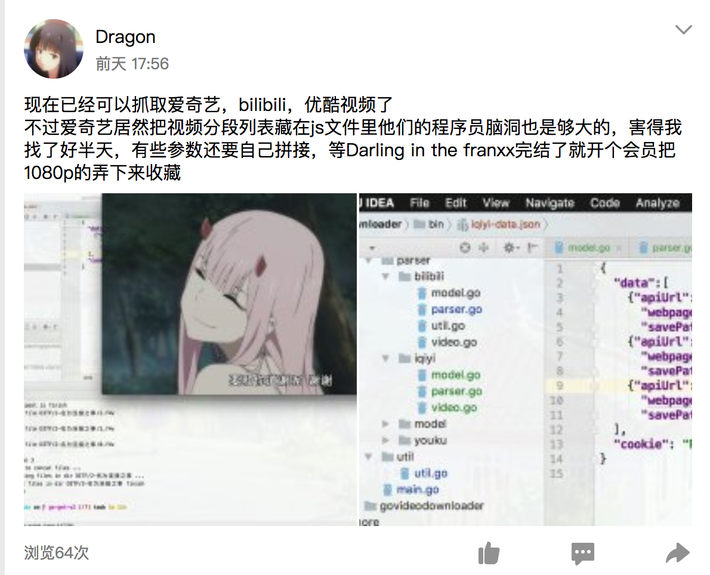

前面一段时间使用Chrome抓取了各大网站的视频分段的链接，并使用Golang编写了下载程序，通过读取配置文件的方式实现了半自动化下载，下载结束之后使用开源的ffmpeg对其进行拼接
实际上，对于网页视频播放就流程我之前一直没有搞清楚，网上对于这方面也没有什么文章，记得大二寒假的时候就有下载B站视频的想法，使用开发者工具查看video标签看到的也只是一个blob链接，根本抓不到原始的视频链接，从此这就成为了我的一个心结。当然，Chrome上有插件可以实现视频的下砸，使用python编写的开源工具you-get也可以对视频进行下载，但是我还是不太满意，一来他们下载视频的清晰度不够，我还是B站的大会员，当然希望可以下载1080p+的视频，二来下载过程中要么速度慢，要么下载或拼接过程中会出现中断的问题，三来作为一个计算机专业的学生，对未知的事物寻根探底是一个基本素质嘛
大约是今年三月份，在javaEE课上用Chrome对A站的视频进行抓取，在XHR请求中可以抓到视频的文件，但是都很短，6-7min，在点击7min之后的进度条之后才会加载新的分段，觉得比较麻烦，暂时放弃了
一个偶然的契机，大约是四月的时候，我想获取扇贝网的一些api，但是这些api是服务于App客户端的，所以我就有了抓取客户端http请求的想法，废了一番周折，使用抓包工具Charles，对与我iPad上的扇贝客户端，不但可以抓到http的报文，连https的也可以抓到，在获取扇贝网api的同时，我还发现了Bilibili客户端也在发一些http请求。因为客户端可以下载部分视频，所以我就有了这么一个想法：我在客户端下载视频的同时，是否可以抓到那个视频的地址链接呢？还真的给我抓到了，抓到了一个存有分段链接的JSON返回值，一个24min的视频分了4段，有四个链接以及其他的一些信息
要是一个一个手动下载太麻烦了，所以我打算编写一个自动下载程序，选择的编程语言是Golang，因为在刚过去的寒假，在慕课网上学习了一个Golang的实战，从此就对Golang情有独钟，刚开学的那阵子还用它写了一个自动查打卡的程序（PS：我是扇贝一个小组的组长，需要每天查组员打卡率）部署到了自己的服务器上，每晚十一点五十自动查卡踢人
一开始的思路是把要下载的链接写在JSON配置文件中，程序开始执行后先读取JSON配置文件，伪装成客户端发起请求获取分段列表，然后一个分段链接开一个goroutine进行下载。思路简单，结构清晰，一下午就写完了，也可以实现视频下载到电脑上了，还高兴地发到QQ空间里
但是还是有缺陷的：首先，操作复杂，需要在iPad客户端进行操作对视频进行下载以获取分段列表，其次，下载视频不全面，对于一些番剧在客户端也无法下载的话，我也就没有办法获取分段链接，最后，可控性差，我无法控制并发的goroutine的数目，算是一个半残的程序吧
但是这个给我了一些启发，对于网页视频的播放会不会也是先由页面脚本发起请求获取一个视频分段列表，然后按分段进行加载呢。我尝试着使用Chrome对B站的XHR请求进行抓取分析，果然，抓到了一个请求的返回值是和之前客户端抓到的类似的JSON文件。当时我真的是想发现一个全新的世界一样高兴，立刻就着手编写对B站网页视频下载的程序。思路有的话就写的很快，只不过这次http请求的header要写的复杂一点，Referer，Origin，Cookie，Host都必须严格写对，否则就会出错
很快就写好了，对新番1080p+的获取也非常顺利，真的很开心，又发了一条说说
停了一段时间，干了几件事情，用Django写了一个简单的数据呈现的网页，和大四可能的毕业设计有关；使用arpsoof进行欺骗抓包，顺便搞一些小破坏；补了全金属狂潮的番剧1-3外加剩下的轻小说。
大约是五月中旬，有事偶然，发现了一个视频拼接转格式一站式服务的神器ffmpeg，配合这bash脚本可以时间视频的批量拼接与转格式，同时对画质的损失非常小，做了一个测试，拼接21个分段3.7G的文件就用了16s，实在是佩服开源界的大神
b站的部分番剧有地区限制，我使用一个插件可以破解这些限制，其实说白了就是人家在境外架了一个服务器，b站先把信息发给它然后它在转到我的Chrome上，我也抓取了它的分段列表，修改了部分程序，使程序也可以下载这部分视频了。这样子就实现了对B站全站视频的下载
开发第一阶段告一段落
既然b站视频可以下载，别的网站视频为什么就不能下呢，也是为了提升程序的泛用性，决定对程序代码进行重构。之前有看过you-get的代码，它的程序结构是各个逻辑块之前相分离的，它的泛用性极广是建立在其有对大量网站视频解析的模块上的，模块单独放在一个专门的文件夹中，独立于其它逻辑，由主程序对与用户的输入进行判断来使用相应的parser
在寒假学习Golang课程的时候最终的项目也是写一个爬虫项目，老师使用的架构也是将解析程序和核心逻辑分离，由核心程序选取合适的parser进行数据的获取与处理，而且Golang除了goroutine之外的另一特色就是面向接口的编程，也就是一个struct只要实现的接口的方法它就可以被作为接口类型，举个例子
1 | package main |
所以，我打算将核心模块和解析视频列表模块相分离，并把视频拼接功能集成到程序中自动化执行，不过依然是手动抓取接口写入配置文件中，对了，有一个小坑，配置文件中填写的链接的开头不能有空格，否则用url.Parse是会报错：’error：first path segment in URL cannot contain colon’
核心模块包括调度模块scheduler，下载模块downloader，引擎模块engine
调度模块scheduler放在专门的一个goroutine，把所以的请求任务添加一个pool（queue）中，接收downloader的请求向downloader提供下载任务
下载模块downloader实现对视频列表的下载，从scheduler中收到一个任务就为其开一个goroutine进行下载，可控制并发下载任务的数量，解决了前面的那个缺陷。在后来实现的出了一个问题，下载进行到2min30s左右的时候程序就不再发送请求了，后来发现是在downloader中我写了一个死循环，当任务到最大数量的时候死循环一直在死转，网上说不建议在golang的主goroutine中写死循环，所以我就添加了一个chan在任务满的时候对其进行阻塞，只有当完成一个任务后，也就是任务数未达上线时才进行恢复
引擎模块engine规定程序的主要执行步骤：检测环境配置 –> 根据用户的输入生成解析器 –> 解析获取视频列表与保存路径 –> 想请求池中添加request –> 开始下载 –> 下载结束后链接文件
解析视频列表模块规定了一些通用的接口的类型，需要各个下载模块实现
移植了第一个版本的Bilibili下载代码，没有出现bug，下载也很顺利，第二个目标是优酷，很快接抓到了它的链接，优酷的分段更厉害，基本上时1M不到一个分段，但这更有利于我们并发下载，但是不能进行高并发下载，一次最多只能同时开2-4个任务，否则会出现分段丢失的问题
接下来是爱奇艺，这个网站即比较奇葩了，在开发者工具中抓包，XHR里怎么也抓不到播放列表，看了you-get对于爱奇艺下载模块的代码，也没看太懂，后来经过不懈的努力，终于发现列表在一个js的文件中，在js文件中，js…其中包含一个JSON文件，只要把它提起起来就可以了，然后，这些只是用于请求真实分段地址的链接，对于这些链接还需要添加一些参数，最坑的就是其中有一个参数是Unix时间，后来发现这个链接居然还有失效时间，是2-3min，没发现这个问题之前我老是出现分段丢失的问题，不过最后问题也算解决了，同一个视频，用you-get下载要花好几分钟的用我这个只要三四十秒

最后是腾讯视频，和优酷差不多，只不过视频分段获取的不是很容易，需要来回切换清晰度来获取，不过总体来说还算是顺利
昨天在机房用学校的电脑下腾讯视频的西部世界第二部，下载速度居然可以飙到100Mb/s，所以说嘛，并发效率就是高 :-p
目前为止支持Bilibili，爱奇艺，优酷，腾讯视频，也算是支持国内主流网站了，最后也添加了一些选项，比如让用户选择下载器，选择最大并发数量，这样就不用每次都编译一遍了。
今天上午用室友的Youku会员把上面的高达Origin都下下来了，注意，第二张图里的那几个视频其实都不太全，因为我开的并发数量太多了，第二次下的时候就开了4个，完成后和之前的对比发现第一次下载的内容总共缺失了快500Mb的分段
在这个带宽已经足以支撑起在线看视频的时代，我其实也不怎么有下载视频的需求，这么做只是为了解其原理并加以实现，（…好吧我其实是想把Darling in the Franxx弄下来收藏），项目代码也放在Github上了，记得一个登山者说过：“为什么要登山？因为它就在那里”
下午写完这个总结，这个项目也算是告一段落了